농산물품질관리사-1차 (2017-06-03 기출문제)
1과목: 관계 법령
1. 농수산물 품질관리법령상 농산물의 지리적 표시 등록거절 사유에 해당 되지 않는 것은?
- 해당 품목이 지리적표시 대상지역에서만 생산된 것이 아닌 경우
- 해당 품목이 지리적표시 대상지역에서 생산된 역사가 깊지 않은 경우
- 해당 품목의 우수성이 국내에는 널리 알려져 있지만 국외에는 알려지지 아니한 경우
- 「상표법」에 따라 먼저 출원되었거나 등록된 타인의 상표와 같거나 비슷한 경우
(정답률: 73%)

2. 농수산물 품질관리법령상 농산물의 이력추적관리 등록에 관한 설명으로 옳지 않은 것은?
- 이력추적관리 표시정지 명령을 위반하여 계속 표시한 경우는 등록을 취소하여야 한다.
- 이력추적관리 등록 유효기간의 연장기간은 해당 품목의 이력추적관리 등록의 유효기간을 초과할 수 없다.
- 이력추적관리 등록 대상품목은 농산물(축산물은 제외) 중 식용을 목적으로 생산하는 농산물로 한다.
- 이력추적관리 등록을 하려는 자는 이상이 있는 농산물에 대한 위해요소관리계획서를 제출하여야 한다.
(정답률: 48%)
3. 농수산물 품질관리법령상 3년 이하의 징역 또는 3천만원 이하의 벌금에 처해지는 위반행위를 한 자는?
- 우수표시품이 아닌 농산물에 우수표시품의 표시를 하거나 이와 비슷한 표시를 한 자
- 유전자변형농산물 표시의 이행ㆍ변경ㆍ삭제 등 시정명령을 이행하지 아니한 자
- 검사를 받아야 하는 농산물에 대하여 검사를 받지 아니한 자
- 다른 사람에게 농산물품질관리사의 명의를 사용하게 하거나 그 자격증을 빌려준 자
(정답률: 42%)
4. 농수산물 품질관리법령상 농산물의 등급규격을 정할 때 고려해야 하는 사항을 모두 고른 것은?
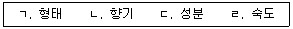
- ㄱ, ㄴ
- ㄱ, ㄹ
- ㄴ, ㄷ
- ㄱ, ㄷ, ㄹ
(정답률: 34%)
5. 농수산물 품질관리법령상 안전성조사 결과 생산단계 안전기준을 위반한 농산물 또는 농지에 대한 조치방법으로 옳지 않은 것은?
- 해당 농산물의 몰수
- 해당 농산물의 출하 연기
- 해당 농지의 개량
- 해당 농지의 이용 금지
(정답률: 67%)
6. 농수산물 품질관리법령상 유전자변형농산물의 표시 위반에 대한 처분에 해당되지 않는 것은?
- 표시의 변경 명령
- 표시의 삭제 명령
- 위반품의 용도전환 명령
- 위반품의 거래행위 금지 처분
(정답률: 65%)
7. 농수산물 품질관리법령상 농산물의 안전성조사에 관한 설명으로 옳은 것은?
- 식품의약품안전처장은 안전한 농축산물의 생산ㆍ공급을 위한 안전관리계획을 5년마다 수립ㆍ시행하여야 한다.
- 농림축산식품부장관은 농산물의 생산에 이용ㆍ사용하는 농지ㆍ용수(用水)ㆍ자재 등에 대하여 안전성조사를 하여야 한다.
- 식품의약품안전처장은 농산물의 생산단계 안전기준을 정할 때에는 관계 시ㆍ도지사와 합의하여야 한다.
- 식품의약품안전처장은 유해물질 잔류조사를 위하여 필요하면 관계 공무원에게 무상으로 시료 수거를 하게 할 수 있다.
(정답률: 54%)
8. 농수산물 품질관리법령상 농산물 지리적표시의 등록을 취소하였을 때 공고하여야 하는 사항은?
- 등록일 및 등록번호
- 지리적표시 등록 대상품목 및 등록명칭
- 지리적표시품의 품질 특성과 지리적 요인의 관계
- 지리적표시 대상지역의 범위
(정답률: 38%)
9. 농수산물 품질관리법령상 정부가 수매하는 농산물로서 농림축산식품부장관의 검사를 받아야 하는 것이 아닌 것은?
- 겉보리
- 쌀보리
- 누에씨
- 땅콩
(정답률: 77%)
10. 농수산물 품질관리법령상 농산물의 검사판정 취소 사유로 옳지 않은 것은?
- 농림축산식품부령으로 정하는 검사 유효기간이 지나고, 검사 결과의 표시가 없어지거나 명확하지 아니하게 된 경우
- 거짓이나 그 밖의 부정한 방법으로 검사를 받은 사실이 확인된 경우
- 검사 또는 재검사 결과의 표시 또는 검사증명서를 위조하거나 변조한 사실이 확인된 경우
- 검사 또는 재검사를 받은 농산물의 포장이나 내용물을 바꾼 사실이 확인된 경우
(정답률: 73%)
11. 농수산물 품질관리법령상 농산물품질관리사의 업무로 옳지 않은 것은?
- 포장농산물의 표시사항 준수에 관한 지도
- 농산물의 생산 및 수확 후의 품질관리기술 지도
- 농산물 및 농산가공품의 품위ㆍ성분 등에 대한 검정
- 농산물의 선별ㆍ저장 및 포장 시설 등의 운용ㆍ관리
(정답률: 57%)
12. 농수산물 품질관리법령상 농산물우수관리인증을 신청할 수 있는 자는?
- 우수표시품이 아닌 농산물에 우수표시품의 표시를 하거나 이와 비슷한 표시를 하여 벌금 이상의 형이 확정된 후 1년이 지나지 아니한 자
- 이력추적관리의 표시를 한 농산물에 이력추적관리의 등록을 하지 아니한 농산물 또는 농산가공품을 혼합판매하여 벌금 이상의 형이 확정된 후 1년이 지나지 아니한 자
- 농산물에 대한 검사 및 검정 결과의 표시, 검사증명서 및 검정증명서를 위조하여 벌금 이상의 형이 확정된 후 1년이 지나지 아니한 자
- 유전자변형농산물의 표시를 거짓으로 하거나 이를 혼동하게 할 우려가 있는 표시를 하여 벌금 이상의 형이 확정된 후 1년이 지나지 아니한 자
(정답률: 36%)
13. 농수산물 품질관리법령상 농림축산식품부장관이 6개월 이내의 기간을 정하여 우수관리인증기관의 업무정지를 명할 수 있는 경우가 아닌 것은?
- 우수관리인증 업무와 관련하여 우수관리인증기관의 장 등 임원ㆍ직원에 대하여 벌금 이상의 형이 확정된 경우
- 우수관리인증의 기준을 잘못 적용하는 등 우수관리인증 업무를 잘못한 경우
- 정당한 사유없이 1년 이상 우수관리인증 실적이 없는 경우
- 거짓이나 그 밖의 부정한 방법으로 우수관리인증기관 지정을 받은 경우
(정답률: 24%)
14. 농수산물 품질관리법령상 우수관리인증의 취소 및 표시정지에 해당하는 다음의 위반사항 중 1차 위반만으로는 인증취소가 되지 않는 것을 모두 고른 것은?
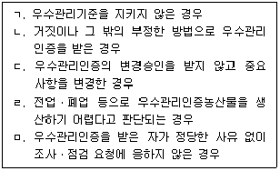
- ㄱ, ㄷ
- ㄱ, ㄷ, ㅁ
- ㄴ, ㄷ, ㄹ
- ㄴ, ㄹ, ㅁ
(정답률: 82%)
15. 농수산물의 원산지 표시에 관한 법령상 개별기준에 의한 위반금액별 과징금의 부과기준으로 옳지 않은 것은?
- 100만원 초과 500만원 이하: 위반금액 × 0.5
- 500만원 초과 1,000만원 이하: 위반금액 × 1.0
- 1,000만원 초과 2,000만원 이하: 위반금액 × 1.5
- 2,000만원 초과 3,000만원 이하: 위반금액 × 2.0
(정답률: 25%)
16. 농수산물의 원산지 표시에 관한 법령상 일반음식점 영업을 하는 자가 농산물을 조리하여 판매하는 경우 원산지 표시 대상이 아닌 것은?
- 누룽지에 사용하는 쌀
- 깍두기에 사용하는 무
- 콩국수에 사용하는 콩
- 육회에 사용하는 쇠고기
(정답률: 62%)
17. 농수산물 유통 및 가격안정에 관한 법령상 전자거래를 촉진하기 위하여 한국농수산식품유통공사 등에 수행하게 할 수 있는 업무가 아닌 것은?
- 대금결제 지원을 위한 인터넷 은행의 설립
- 농산물 전자거래 분쟁조정위원회에 대한 운영 지원
- 농산물 전자거래 참여 판매자 및 구매자의 등록ㆍ심사 및 관리
- 농산물 전자거래에 관한 유통정보 서비스 제공
(정답률: 72%)
18. 농수산물 유통 및 가격안정에 관한 법령상 도매시장 개설자로부터 중도매업의 허가를 받을 수 있는 자는?
- 파산선고를 받고 복권되지 아니한 사람이나 피성년후견인
- 절도죄로 징역형을 선고받고 그 형의 집행이 종료 된지 1년이 지나지 아니한 자
- 중도매업 허가증을 타인에게 대여하여 허가가 취소된 날부터 1년이 지난 자
- 도매시장법인의 주주가 해당 도매시장법인의 업무와 경합되는 중도매업을 하려는 자
(정답률: 48%)
19. 농수산물 유통 및 가격안정에 관한 법령상 농산물가격안정기금으로 출하를 약정하는 생산자에게 그 대금의 일부를 미리 지급할 수 있는 대상 농산물을 모두 고른 것은?
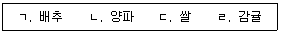
- ㄱ, ㄴ
- ㄷ, ㄹ
- ㄱ, ㄴ, ㄹ
- ㄱ, ㄴ, ㄷ, ㄹ
(정답률: 50%)
20. 농수산물 유통 및 가격안정에 관한 법령상 도매시장거래 분쟁조정위원회의 위원으로 위촉할 수 있는 사람을 모두 고른 것은?
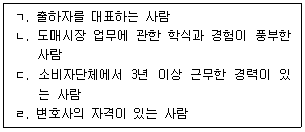
- ㄱ, ㄴ
- ㄷ, ㄹ
- ㄱ, ㄴ, ㄷ
- ㄱ, ㄴ, ㄷ, ㄹ
(정답률: 78%)
21. 농수산물 유통 및 가격안정에 관한 법령상 농산물의 비축사업 등을 위탁하기 위하여 정하는 사항으로 옳지 않은 것은?
- 대상 농산물의 품목 및 수량
- 대상 농산물의 수출에 관한 사항
- 대상 농산물의 판매 방법ㆍ수매에 필요한 사항
- 대상 농산물의 품질ㆍ규격 및 가격
(정답률: 56%)
22. 농수산물 유통 및 가격안정에 관한 법령상 농산물 수탁판매의 원칙에 관한 설명으로 옳은 것은?
- 시장도매인은 해당 도매시장의 도매시장 법인ㆍ중도매인에게 농산물을 판매하지 못한다.
- 중도매인이 전자 거래소에서 농산물을 거래하는 경우에도 도매시장으로 반입하여야 한다.
- 중도매인 간 거래액은 최저거래금액 산정 시에 포함한다.
- 상장되지 아니한 농산물의 거래는 도매시장 법인의 허가를 받아야 한다.
(정답률: 48%)
23. 농수산물 유통 및 가격안정에 관한 법령상 시(市)가 지방도매시장 개설허가를 받을 경우에 갖추어야할 요건이 아닌 것은?
- 개설하려는 장소가 농수산물 거래의 중심지로서 적절한 위치에 있을 것
- 도매시장이 보유하여야 하는 시설의 기준은 부류별로 그 지역의 인구 및 거래 물량 등을 고려하여 정할 것
- 농산물집하장의 설치 운영에 관한 사항을 정할 것
- 운영관리 계획서의 내용이 충실하고 그 실현이 확실하다고 인정되는 것일 것
(정답률: 59%)
24. 농수산물 유통 및 가격안정에 관한 법령상 주산지의 지정 및 해제에 관한 설명으로 옳지 않은 것은?
- 주요 농산물의 재배면적이 농림축산식품부장관이 고시하는 면적 이상이어야 한다.
- 주요 농산물의 출하량이 농림축산식품부장관이 고시하는 수량 이상이어야 한다.
- 주요 농산물의 생산지역의 지정은 읍ㆍ면ㆍ동 또는 시ㆍ군ㆍ구 단위로 한다.
- 농림축산식품부장관은 주산지가 지정요건에 적합하지 아니하게 되었을 때에는 그 지정을 변경하거나 해제할 수 있다.
(정답률: 53%)
25. 농수산물 유통 및 가격안정에 관한 법령상 도매시장법인이 과도한 겸영사업으로 인하여 도매업무가 약화될 우려가 있는 경우 겸영사업 제한으로 옳지 않은 것은?
- 보완명령
- 6개월 금지
- 1년 금지
- 2년 금지
(정답률: 27%)
2과목: 원예작물학
26. 채소작물과 주요 기능성물질의 연결이 옳지 않은 것은?
- 양파 – 케르세틴(quercetin)
- 상추 – 락투신(lactucin)
- 딸기 - 엘라그산(ellagic acid)
- 생강 - 알리인(alliin)
(정답률: 77%)
27. 채소작물 중 조미채소는?
- 마늘, 배추
- 마늘, 양파
- 배추, 호박
- 호박, 양파
(정답률: 91%)
28. 작업의 편리성을 높이기 위해 양액재배 베드를 허리 높이로 설치하여 NFT 방식 또는 점적관수 방식으로 딸기를 재배하는 방법은?
- 고설 재배
- 아칭 재배
- 매트 재배
- 홈통 재배
(정답률: 84%)
29. 다음 채소종자 중 장명(長命)종자를 모두 고른 것은?
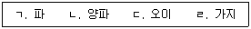
- ㄱ, ㄴ
- ㄷ, ㄹ
- ㄱ, ㄴ, ㄷ
- ㄴ, ㄷ, ㄹ
(정답률: 75%)
30. 채소류의 추대와 개화에 관한 설명으로 옳지 않은 것은?
- 상추는 저온단일 조건에서 추대가 촉진된다.
- 배추는 고온장일 조건에서 추대가 촉진된다.
- 오이는 저온단일 조건에서 암꽃의 수가 증가한다.
- 당근은 녹식물 상태에서 저온에 감응하여 꽃눈이 분화된다.
(정답률: 43%)
31. 채소작물 재배 시 병해충의 경종적(耕種的) 방제법에 속하는 것은?
- 윤작
- 천적 방사
- 농약 살포
- 페로몬 트랩
(정답률: 69%)
32. 채소작물의 과실 착과와 발육에 관한 설명으로 옳은 것은?
- 토마토는 위과이며 자방이 비대하여 과실이 된다.
- 딸기는 진과이고 화탁이 발달하여 과실이 된다.
- 멜론은 시설재배 시 인공 수분이나 착과제 처리를 하는 것이 좋다.
- 오이는 단위결과성이 약하여 인공수분이나 착과제 처리가 필요하다.
(정답률: 77%)
33. 식물체 내에서 수분의 역할에 관한 설명으로 옳지 않은 것은?
- 광합성의 원료가 된다.
- 세포 팽압 조절에 관여한다.
- 식물에 필요한 영양원소를 이동시킨다.
- 증산작용을 통해 잎의 온도를 상승시킨다.
(정답률: 84%)
34. 다음 화훼작물 중 화목류에 해당하는 것을 모두 고른 것은?
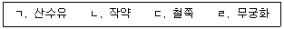
- ㄱ, ㄴ
- ㄷ, ㄹ
- ㄱ, ㄷ, ㄹ
- ㄴ, ㄷ, ㄹ
(정답률: 74%)
35. 화훼작물과 주된 영양번식 방법의 연결이 옳지 않은 것은?
- 국화 – 삽목
- 백합 – 취목
- 베고니아 – 엽삽
- 무궁화 - 경삽
(정답률: 65%)
36. 1경1화 형태로 출하하기 때문에 개화 전에 측뢰, 측지를 따 주어야 상품성이 높은 절화용 화훼작물은?
- 능소화
- 시클라멘
- 스탠다드국화
- 글라디올러스
(정답률: 82%)
37. 절화류 취급방법에 관한 설명으로 옳지 않은 것은?
- 수국은 수명을 유지하고 수분흡수를 높이기 위해 워터튜브에 꽂아 유통되고 있다.
- 국화는 저장 시 암흑상태가 지속되면 잎이 황변되어 상품성이 떨어진다.
- 안수리움은 저장 시 4℃ 이하의 저온에 두어야 수명이 길어진다.
- 줄기 끝을 비스듬히 잘라 물과의 접촉면적을 넓혀 물의 흡수를 증가시킨다.
(정답률: 69%)
38. 일조량의 부족, 낮은 야간온도 및 엽수 부족으로 인하여 장미 꽃눈이 꽃으로 발육하지 못하는 현상은?
- 수침 현상
- 블라인드 현상
- 일소 현상
- 로제트 현상
(정답률: 77%)
39. 절화 유통 과정에서 눕혀 수송하면 화서 선단부가 중력 반대방향으로 휘어지는 현상을 보이는 화훼작물은?
- 장미, 백합
- 칼라, 튤립
- 거베라, 스토크
- 글라디올러스, 금어초
(정답률: 73%)
40. ( )안에 들어갈 말을 순서대로 옳게 나열한 것은?
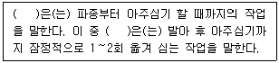
- 육묘, 가식
- 가식, 육묘
- 육묘, 정식
- 재배, 정식
(정답률: 89%)
41. 절화보존용액 구성성분 중 에틸렌 생성 및 작용을 억제시키는 목적으로 사용되는 물질이 아닌 것은?
- 황산알루미늄
- STS
- AOA
- AVG
(정답률: 47%)
42. 다음 중 야파(夜破, night break) 처리를 하면 개화시기가 늦춰지는 화훼작물을 모두 고른 것은?
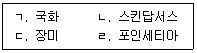
- ㄱ, ㄴ
- ㄱ, ㄹ
- ㄴ, ㄷ
- ㄷ, ㄹ
(정답률: 84%)
43. 핵과류(核果類, stone fruit)에 해당하는 과실은?
- 배
- 사과
- 호두
- 복숭아
(정답률: 79%)
44. 과수의 번식에 관한 설명으로 옳지 않은 것은?
- 분주, 조직배양은 영양번식에 해당한다.
- 취목은 실생번식에 비해 많은 개체를 얻을 수 있다.
- 접목은 대목과 접수를 조직적으로 유합ㆍ접착시키는 번식법이다.
- 발아가 어려운 종자의 파종전 처리방법에는 침지법, 약제처리법이 있다.
(정답률: 83%)
45. 과수의 병해충에 관한 설명으로 옳은 것은?
- 사과 근두암종병은 진균에 의한 병이다.
- 바이러스는 테트라사이클린으로 치료가 가능하다.
- 대추나무 빗자루병은 파이토플라즈마에 의한 병이다.
- 과수류를 가해하는 응애에는 점박이응애, 긴털이리응애가 있다.
(정답률: 84%)
46. 과원의 토양관리 방법 중 초생법에 관한 설명으로 옳은 것은?
- 토양침식이 촉진된다.
- 토양의 입단화가 억제된다.
- 지온의 변화가 심해 유기물의 분해가 촉진된다.
- 과수와 풀 사이에 양ㆍ수분 쟁탈이 일어날 수 있다.
(정답률: 82%)
47. 다음 중 재배에 적합한 토양 산도가 가장 낮은 과수는?
- 감
- 포도
- 참다래
- 블루베리
(정답률: 56%)
48. 과원의 시비관리에 관한 설명으로 옳지 않은 것은?
- 칼슘은 산성 토양을 중화시키는 토양개량제로 이용되고 있다.
- 질소는 과다시비하면 식물체가 도장하고 꽃눈형성이 불량하게 된다.
- 망간은 과다시비하면 착색이 늦어지고 과육에 내부갈변이 나타난다.
- 마그네슘은 엽록소의 필수 구성 성분으로 부족 시 엽맥 사이의 황화현상을 일으킨다.
(정답률: 53%)
49. 복숭아 재배 시 봉지씌우기의 목적이 아닌 것은?
- 무기질 함량을 높인다.
- 병해충으로부터 과실을 보호한다.
- 열과를 방지한다.
- 농약이 과실에 직접 묻지 않도록 한다.
(정답률: 85%)
50. 다음 중 자발휴면 타파에 필요한 저온요구도가 가장 낮은 과수는?
- 사과
- 살구
- 무화과
- 동양배
(정답률: 50%)
3과목: 수확 후 품질관리론
51. 다음 원예작물의 수확기 판정기준으로 옳지 않은 것은?
- 당근은 뿌리가 오렌지색이고 심부는 녹색일 때 수확한다.
- 감자는 괴경의 전분이 축적되고 표피가 코르크화 되었을 때 수확한다.
- 양파는 부패율 감소를 위해 잎이 90% 정도 도복되었을 때 수확한다.
- 마늘은 잎이 30% 정도 황화되면서부터 경엽이 1/2~1/3 정도 건조되었을 때 수확한다.
(정답률: 39%)
52. 겉포장재와 속포장재의 기본요건에 관한 설명으로 옳지 않은 것은?
- 겉포장재는 수송 및 취급이 편리하여야 한다.
- 겉포장재는 외부의 환경으로부터 상품을 보호해야 한다.
- 속포장재는 상품 간 압상, 마찰을 방지할 수 있어야 한다.
- 속포장재는 기능성보다는 심미성을 우선으로 한 재질을 선택해야 한다.
(정답률: 80%)
53. 원예산물의 MA 포장용 필름 조건으로 옳지 않은 것은?
- 인장강도가 높아야 한다.
- 결로현상을 막을 수 있어야 한다.
- 외부로부터의 가스차단성이 높아야 한다.
- 접착작업과 상업적 취급이 용이해야 한다.
(정답률: 69%)
54. 저온유통수송에 관한 설명으로 옳은 것은?
- 예냉한 농산물을 일반트럭이나 컨테이너를 사용하여 운송한다.
- 저장고를 구비하여 출하 전까지 저온저장을 해야 한다.
- 상온유통에 비하여 압축강도가 낮은 포장상자를 사용한다.
- 다품목 운송 시 수송온도를 동일하게 적용하면 경제성을 높일 수 있다.
(정답률: 58%)
55. 품질관리측면에서 일반 청과물과 비교했을 때 신선편이 농산물이 갖는 특징으로 옳지 않은 것은?
- 노출된 표면적이 크다.
- 물리적인 상처가 많다.
- 호흡속도가 느리다.
- 미생물 오염 가능성이 높다.
(정답률: 62%)
56. 원예산물과 저온장해 증상의 연결이 옳은 것은?
- 참외 – 발효촉진
- 토마토 – 후숙억제
- 사과 – 탈피증상
- 복숭아 - 막공현상
(정답률: 69%)
57. 기계적 장해를 회피하기 위한 수확 후 관리 방법으로 옳은 것을 모두 고른 것은?
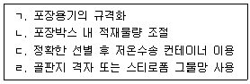
- ㄱ, ㄷ
- ㄴ, ㄷ
- ㄱ, ㄴ, ㄹ
- ㄱ, ㄴ, ㄷ, ㄹ
(정답률: 80%)
58. 수확 후 손실경감 대책으로 옳지 않은 것은?
- 바나나는 수확 후 후숙억제를 위해 5℃에서 저장한다.
- 배, 감귤은 수확 후 7~10일 정도 통풍이 잘되는 곳에서 예건한다.
- 단감은 갈변을 예방하기 위해 수확 후 0℃에서 3~4주간 저온저장한 후 MA 포장을 실시한다.
- 조생종 사과는 수확 직후에 호흡이 가장 왕성하기 때문에 예냉을 통해 5℃까지 낮춘다.
(정답률: 42%)
59. 인경과 화채류의 호흡에 관한 설명이다. ( )안에 들어갈 원예산물을 순서대로 나열한 것은?
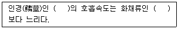
- 무, 배추
- 당근, 콜리플라워
- 양파, 브로콜리
- 마늘, 아스파라거스
(정답률: 58%)
60. 에틸렌이 원예산물에 미치는 영향으로 옳지 않은 것은?
- 토마토의 착색
- 아스파라거스 줄기의 연화
- 떫은 감의 탈삽
- 브로콜리의 황화
(정답률: 48%)
61. 원예산물의 성숙 과정에서 착색에 관한 설명으로 옳지 않은 것은?
- 고추는 캡사이신 색소의 합성으로 일어난다.
- 사과는 안토시아닌 색소의 합성으로 일어난다.
- 토마토는 카로티노이드 색소의 합성으로 일어난다.
- 바나나는 가려져 있던 카로티노이드 색소가 엽록소의 분해로 전면에 나타난다.
(정답률: 45%)
62. 감자 수확 후 큐어링이 저장 중 수분 손실을 줄이고 부패균의 침입을 막을 수 있는 주된 이유는?
- 슈베린 축적
- 큐틴 축적
- 펙틴질 축적
- 왁스질 축적
(정답률: 35%)
63. 원예산물의 풍미를 결정짓는 인자는?
- 크기, 모양
- 색도, 경도
- 당도, 산도
- 염도, 밀도
(정답률: 80%)
64. Hunter L, a, b 값에 관한 설명으로 옳지 않은 것은?
- 과피색을 수치화하는데 이용한다.
- L 값이 클수록 밝음을 의미한다.
- 양(+)의 a 값은 적색도를 나타낸다.
- 양(+)의 b 값은 녹색도를 나타낸다.
(정답률: 45%)
65. 사과의 비파괴 품질 측정법으로서 근적외선(NIR) 분광법의 주요 용도는?
- 당도 선별
- 무게 선별
- 모양 선별
- 색도 선별
(정답률: 53%)
66. 원예산물의 경도와 연관성이 큰 품질 구성 요소는?
- 조직감
- 착색도
- 안전성
- 기능성
(정답률: 85%)
67. 저장 중인 원예산물의 증산작용에 관한 설명으로 옳지 않은 것은?
- 온도를 낮추면 증산이 감소한다.
- 기압을 낮추면 증산이 증가한다.
- CO2 농도를 높이면 증산이 감소한다.
- 키위나 복숭아처럼 표피에 털이 많으면 증산이 증가한다.
(정답률: 60%)
68. 농산물의 안전성에 위협이 되는 곰팡이 독소로 옳지 않은 것은?
- 아플라톡신(aflatoxin) B1
- 오크라톡신(ochratoxin) A
- 보툴리늄 톡신(botulinum toxin)
- 제랄레논(zearalenone)
(정답률: 44%)
69. 과실의 성숙 과정에서 일어나는 현상으로 옳지 않은 것은?
- 전분이 당으로 변한다.
- 유기산이 증가하여 신맛이 증가한다.
- 엽록소가 감소하여 녹색이 감소한다.
- 펙틴질이 분해되어 조직이 연화된다.
(정답률: 71%)
70. 다음 농산물 포장재 중 기계적 강도가 높고 산소투과도가 가장 낮은 것은?
- 저밀도 폴리에틸렌(LDPE)
- 폴리에스테르(PET)
- 폴리스티렌(PS)
- 폴리비닐클로라이드(PVC)
(정답률: 42%)
71. HACCP 7원칙 중 다음 4단계의 실시 순서가 옳은 것은?
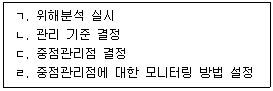
- ㄱ → ㄴ → ㄷ → ㄹ
- ㄱ → ㄷ → ㄴ → ㄹ
- ㄴ → ㄱ → ㄹ → ㄷ
- ㄴ → ㄹ → ㄷ → ㄱ
(정답률: 36%)
72. 저장 과정에서 과도하게 증산되어 사과의 과피가 쭈글쭈글해지는 수확 후 장해는?
- 고두병
- 밀증상
- 껍질덴병
- 위조증상
(정답률: 57%)
73. 원예산물의 수확 후 가스장해에 관한 설명으로 옳지 않은 것은?
- 복숭아의 섬유질화가 대표적이다.
- 저농도 산소 조건에서는 이취가 발생한다.
- 고농도 이산화탄소 조건에서는 과육갈변이 발생한다.
- 에틸렌에 의해서 포도의 연화(노화) 현상이 발생한다.
(정답률: 48%)
74. 강제통풍식 예냉 방법에 관한 설명으로 옳지 않은 것은?
- 진공식 예냉 방법에 비하여 시설비가 적게 든다.
- 냉풍냉각 방법에 비하여 적재 위치에 따른 온도 편차가 적다.
- 차압통풍 방법에 비하여 냉각속도가 빨라 급속 냉각이 요구되는 작물에 효과적으로 사용될 수 있다.
- 예냉고 내의 공기를 송풍기로 강제적으로 교반시키거나 예냉 산물에 직접 냉기를 불어 넣는 방법이다.
(정답률: 53%)
75. 저온 저장고의 벽면 시공에 사용되는 재료 중에서 단열 효과가 우수한 것은?
- 합판
- 시멘트 블록
- 폴리우레탄 패널
- 콘크리트
(정답률: 80%)
4과목: 농산물유통론
76. 우리나라 농산물 유통정책 과제에 관한 설명으로 옳지 않은 것은?
- 소비자 지향적 유통체계 구축이 필요하다.
- 우리나라 유통 상황에 적합한 수확 후 관리기술체계를 구축해야 한다.
- 기존 유통관련시설 운영의 효율성을 높여야 한다.
- 유통조성사업 규모는 감축시키고 유통시설투자는 확충해야 한다.
(정답률: 77%)
77. 최근 산지직거래 확대에 따른 유통경로 다양화에 관한 설명으로 옳지 않은 것은?
- 도매시장 외 거래가 위축되고 있다.
- 대형유통업체는 구입가격을 조정할 수 있다.
- 종합유통센터를 경유하면 유통단계가 축소된다.
- 수직적 유통경로의 특성을 보인다.
(정답률: 67%)
78. 농산물 유통경로에 관한 설명으로 옳지 않은 것은?
- 도매단계, 소매단계는 유통단계에 포함된다.
- 유통경로는 단계와 길이로 구분한다.
- 중간상이 늘어날수록 유통비용은 증가한다.
- 유통단계가 많을수록 전체 유통경로의 길이는 짧아진다.
(정답률: 85%)
79. 공동계산제도에 관한 설명으로 옳지 않은 것은?
- 주단위, 월단위 등 일정기간의 평균가격을 적용한다.
- 출하자별로 출하물량과 등급을 구분하지 않는다.
- 다품목에 대해 서로 독립된 공동계산을 형성할 수 있다.
- 신선채소와 같이 수확량의 변동이 큰 품목의 경우 가격변동 위험을 축소하는 효과가 더 크다.
(정답률: 41%)
80. 농산물을 구매하기 위하여 설립한 소비자협동조합에 관한 설명으로 옳지 않은 것은?
- 농가수취가격과 소비자 구매가격의 인하를 유도하고 있다.
- 자연을 지키는 사회 참여 활동을 하기도 한다.
- 가격보다 안전하고 믿을 수 있는 품질을 우선시하는 경향이 있다.
- 생산자와 농산물의 직거래를 꾀하고 있다.
(정답률: 60%)
81. 농산물 선물거래를 활성화하기 위한 조건을 모두 고른 것은?
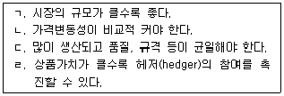
- ㄱ, ㄴ
- ㄷ, ㄹ
- ㄱ, ㄴ, ㄷ
- ㄱ, ㄴ, ㄷ, ㄹ
(정답률: 70%)
82. 농산물의 소매단계 유통조직이 아닌 것은?
- 인터넷 판매
- 체인스토어 물류센터
- 전통시장
- 대형마트(할인점)
(정답률: 59%)
83. 계약자가 생산농가에게 종자, 비료, 농약 등을 제공하고 생산된 물량을 전량 구매 하는 조건의 계약형태는?
- 유통협약계약
- 판매특정계약
- 경영소득보장계약
- 자원공급계약
(정답률: 60%)
84. 다음과 같은 매매방법은?
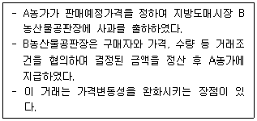
- 상장경매
- 비상장거래
- 정가ㆍ수의매매
- 시장도매인 거래
(정답률: 75%)
85. 현재 우리나라 농산물종합유통센터의 발전 방안으로 옳지 않은 것은?
- 유통센터간 통합ㆍ조정기능 강화
- 실질적 예약상대거래 체계 구축
- 첨단 유통정보시스템 구축
- 수입농산물 취급 추진
(정답률: 78%)
86. 산지에서 이루어지는 밭떼기, 입도선매(立稻先賣) 농산물 거래방식은?
- 정전거래
- 포전거래
- 문전거래
- 창고거래
(정답률: 73%)
87. 농산물 등급화에 관한 설명으로 옳지 않은 것은?
- 등급의 수를 증가시킬수록 유통의 효율성 중 가격의 효율성이 낮아진다.
- 등급기준은 생산자보다 최종소비자의 입장을 우선적으로 고려해야 한다.
- 등급화가 정착되면 농산물 거래가 보다 효율적으로 진행된다.
- 농산물은 무게, 크기, 모양이 균일하지 않기 때문에 등급화가 어렵다.
(정답률: 65%)
88. 유통조성기능에 관한 설명으로 옳지 않은 것은?
- 유통기능이 효율적으로 이루어지도록 하는 기능이다.
- 유통정보, 표준화, 등급화가 포함된다.
- 상적(商的) 유통기능을 의미한다.
- 유통금융과 위험부담 기능이 포함된다.
(정답률: 50%)
89. 농산물의 공급량 변동이 가격에 얼마만큼 영향을 미치는지를 계측하는 수치는?
- 가격신축성
- 가격변동률
- 가격탄력성
- 공급탄력성
(정답률: 7%)
90. 농산물 가격의 안정을 추구하는 방법이 아닌 것은?
- 계약재배사업 확대
- 자조금제도 시행
- 출하약정사업 실시
- 공동판매사업 제한
(정답률: 53%)
91. 생산자, 유통인, 소비자 등의 대표가 농산물 수급조절과 품질향상을 위해 도모하는 사업은?
- 수매비축
- 자조금
- 유통협약
- 농업관측
(정답률: 72%)
92. 최근 솔로 이코노미(solo economy)의 사회현상에서 1인 가구의 증가에 따른 농식품 소비 트렌드로 옳지 않은 것은?
- 쌀 소비량 감소
- HMR(간편가정식) 구매량 감소
- 소분포장 제품 선호 및 외식 증가
- 편의점 도시락 판매량 증가
(정답률: 77%)
93. 시장 세분화의 목적으로 옳지 않은 것은?
- 고객만족의 극대화
- 핵심역량을 집중할 시장의 결정
- 광고와 마케팅 비용의 절감
- 자사 제품 간의 경쟁 방지
(정답률: 57%)
94. 소비자의 구매의사결정 과정을 순서대로 나열한 것은?
- 정보의 탐색 →필요의 인식 →구매의사결정 → 대안의 평가 → 구매 후 평가
- 정보의 탐색 →필요의 인식 →대안의 평가→ 구매의사결정 → 구매 후 평가
- 필요의 인식 →정보의 탐색 →대안의 평가→ 구매의사결정 → 구매 후 평가
- 필요의 인식 →구매의사결정 → 정보의 탐색 → 대안의 평가 → 구매 후 평가
(정답률: 85%)
95. 제품수명주기(PLC)상 매출액은 증가하는 반면 매출 증가율이 감소하는 시기는?
- 성숙기
- 성장기
- 쇠퇴기
- 도입기
(정답률: 70%)
96. 농산물의 브랜드 전략에 관한 설명으로 옳은 것을 모두 고른 것은?
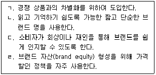
- ㄴ, ㄷ
- ㄷ, ㄹ
- ㄱ, ㄴ, ㄷ
- ㄱ, ㄴ, ㄹ
(정답률: 78%)
97. 마케팅믹스 중 가격전략에 관한 설명으로 옳지 않은 것은?
- 시장경쟁이 치열할수록 개별기업은 독자적으로 가격을 결정하기 어렵다.
- 기업들은 혁신소비자층에 대해 초기 저가전략을 사용하는 경향이 있다.
- 제품가격의 숫자에 대한 소비자들의 심리적인 반응에 따라 가격을 변화시키는 단수(홀수)가격결정 전략이 있다.
- 일반적으로 농산물의 품질은 가격과 직ㆍ간접적으로 연관되어 있다.
(정답률: 63%)
98. 서비스마케팅에서 서비스의 특성으로 옳지 않은 것은?
- 무형성
- 획일성
- 소멸성
- 변동성
(정답률: 50%)
99. 신설 영농조합법인이 PC 및 모바일로 친환경 파프리카를 건강식품 제조회사에 판매하는 인터넷마케팅의 유형으로 옳은 것은?
- B2B
- C2C
- B2G
- B2C
(정답률: 60%)
100. 즉각적이고 단기적인 매출이나 이익 증대를 달성하기 위한 촉진수단은?
- PR
- 광고
- 판촉
- 인적판매
(정답률: 48%)